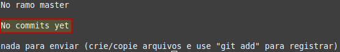
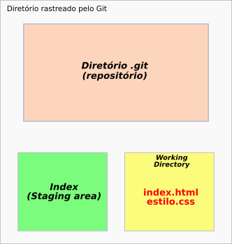
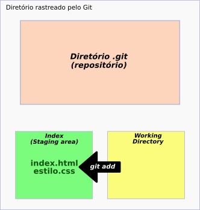

Iniciando o Git
Entre na pasta a qual você pretende fazer o versionamento e no terminal digite:
$ git init
Para inicializar o Git, caso ainda não o tenha feito.
- $ indica que você deve usar o usuário comum para fazer essa operação.
Desse modo a pasta .git será criada. É essa pasta que armazenará as imagens das versões do projetos criados.
Entendendo o fluxo do Git
A partir daqui, vamos entender o fluxo do Git.
- Working directory: é onde estão seus arquivos que serão trabalhados. Aqui ficam os arquivos que ainda não receberam o comando commit.
- Index ou Staging area: é a sala de espera do Git. É aqui que ficam os arquivos que já receberam o comando commit.
- Repositório: é onde são guardados os seus commits.
Git status
Vamos supor que o diretório está vazio. Então vamos verificar o estado atual do git. Assim:
$ git status
O retorno do terminal será algo semelhante a:
Agora vamos criar dois arquivos nesse diretório:
$ touch index.html estilo.css
- o comando touch serve para criar arquivos no Linux.
Digitando novamente o comando git status, temos:
Esses dois arquivos ainda não estão sendo monitorados pelo Git.
No fluxo do Git, temos:
Como podemos perceber, esses dois arquivos ainda não receberam o commit. Por isso eles estão no working directory.
Git add
Para adicionar os dois arquivos, um de cada vez, digite:
$ git add index.html
$ git add estilo.css
Ou para adicionar ambos ao mesmo tempo,
$ git add index.html estilo.css
Caso queira adicionar todos os arquivos de um diretório recursivamente; o que inclui seus subdiretórios e arquivos ou pastas ocultas,
$ git add .
Para adicionar todos os arquivos de uma determinada extensão.
$ git add *.txt
- supondo que a extensão desejada seja txt.
Após incluir nossos arquivos, vamos verificar novamente o estado do Git.
-
É recomendável usar sempre o
git statusapós cada comando do git para saber onde se está.

Observando o fluxo do Git, temos:
Aqui, estamos no index (staging area); a "sala de espera" do Git.
Abaixo um resumo das variações do comando git add:
É a partir daqui que poderemos realizar o commit.